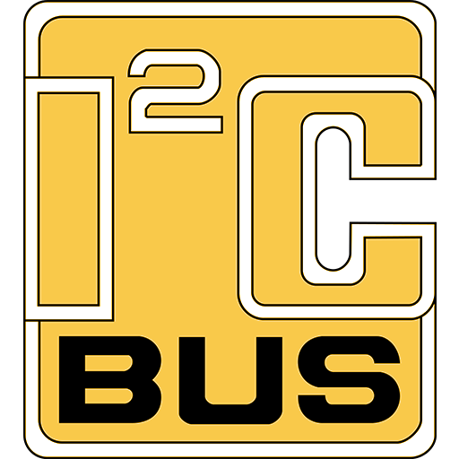

INTEGRAÇÃO
Nossa equipe teve como objetivo realizar algo inédito na história da OBR, e pôr bastante dedicação em cada um dos processos do desenvolvimento do robô.
Ao analisar a competição, planejamos uma estrutura bastante integrativa, onde várias tecnologias e ferramentas foram empregadas de forma coesiva, a fim de obter uma plataforma flexível para lidar com os diferentes obstáculos que a competição dispõe.
Foram utilizados também metodologias de desenvolvimento ágil e ferramentas de produtividade para atingir o máximo no menor tempo possível.
HARDWARE
Foram implementados os seguintes componentes na parte de Hardware:
-
LEGO Mindstorms EV3
Processador principal do robô, onde boa parte das tomadas de decisões são feitas e processadas.
-
Arduino UNO / Pro Mini
Nos permitiu conectar diferentes recursos sensoriais, além de flexibilizar o processo de escolha de componentes.
-
Raspberry Pi 3 B+
Permite a captura em vídeo do mundo externo, e a análise do ambiente ao permitir o uso de extensas bibliotecas e um maior processamento em tempo real.
SOFTWARE
Foram implementados os seguintes componentes na parte de Hardware:
-
RobotC
Processador principal do robô, onde boa parte das tomadas de decisões são feitas e processadas.
-

Protocolo I²C
Nos permitiu conectar diferentes recursos sensoriais, além de flexibilizar o processo de escolha de componentes.
-
Biblioteca OpenCV
Permite a captura em vídeo do mundo externo, e a análise do ambiente ao permitir o uso de extensas bibliotecas e um maior processamento em tempo real.